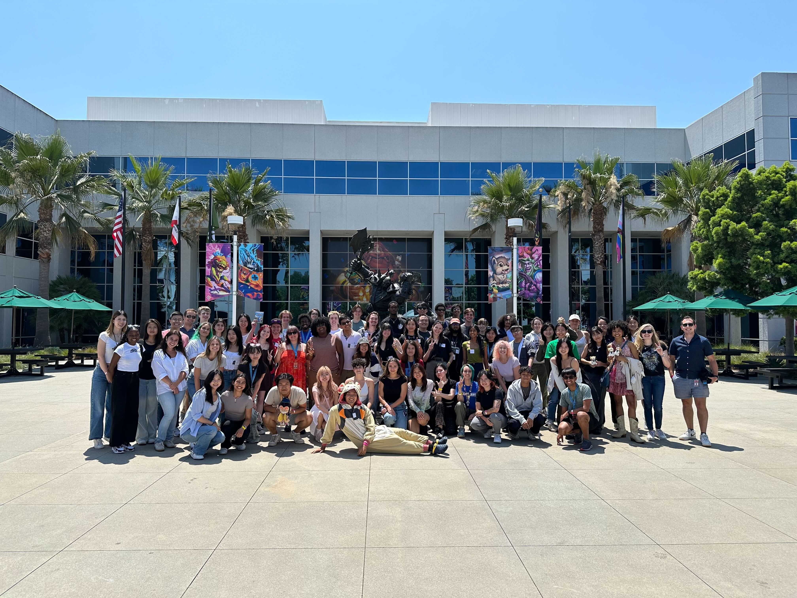

Tools Intern
Infinity Ward
- Implemented UI using PyQt to represent level content in a spatial hierarchy, making it easy to find and select content.
- Responded to bug reports by reproducing and fixing issues then following up with reporters, ensuring tool stability.
- Optimized level baking by batching calls to C++ engine code and multithreading Python code, reducing iteration time.
Stumblebumps Unite
Design Director
- Prototyped concepts during a game jam, pitched to faculty, and got chosen to lead a 15-person capstone project.
- Set and translated vision into design goals; met those goals by evaluating and iterating features against playtest data.
- Designed UI wireframes and used playtest data to iterate those designs, conveying ideas to artists and engineers.
Wash Away
Solo Project
- Consolidated a workflow for editing multiple actors by creating a one-stop interface with Unity C# property drawers.
- Increased accuracy and speed of collision data creation by implementing a 2D collision algorithm and in-engine editor.
- Modified open source, C++/Qt drawing software Krita to support dual-layer editing, eliminating pipeline bottlenecks.

About
In 2021, as a freshman with no connections to the games industry I asked my advisor about opportunities to get some engineering experience. She referred me to Research Experiences for Undergraduates, or REU. I applied and in 2022 landed my first paid programming role as a research assistant at Cal Poly Pomona. I leveraged this experience into a final round interview with Activision. No dice, but the team had positive feedback, and I stayed in touch with my recruiter. This helped me through screening in 2023 and I finally landed the role in 2024.